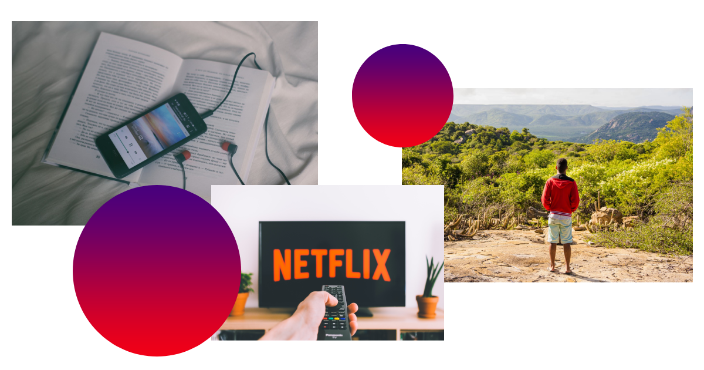

Minha carta de apresentação
Sobre mim
Olá, me chamo Lucas Guedes estou em constante desenvolvimento de minhas habilidades para se tornar um Developer e alcançar uma carreira sólida e promissora na área de desenvolvimento. Já possuo experiência em programação adquirida durante o meu curso técnico em informática.

Objetivo no curso
Meu objetivo no curso é crescer profissionalmente, desenvolver novas habilidades, adquirir conhecimentos e poder e cooperar com a empresa através dos meus conhecimentos na de front-end

Minha família e meus amigos
Minha família e amigos têm sido uma fonte constante de motivação e encorajamento, sempre me incentivando a buscar meus objetivos e me apoiando em cada passo da minha jornada.
Minha família sempre foi uma presença constante e amorosa em minha vida. Eles me encorajam a seguir meus sonhos e me dão o suporte necessário.
Além da minha família, meus amigos também têm sido uma fonte importante de apoio. Eles me dão força quando estou me sentindo desanimado e me encorajam a seguir em frente, mesmo quando as coisas parecem difíceis. Eles são uma parte fundamental da minha rede de suporte, e sou grato por tê-los em minha vida.

Meus hobbies
Sempre fui apaixonado por música. Ouvir minhas músicas preferidas me ajuda a relaxar, a me concentrar e a me animar nos momentos mais difíceis. Gosto de escutar diversos gêneros musicais. Quando estou trabalhando ou estudando, gosto de colocar meus fones de ouvido e me deixar levar pela música, criando um ambiente perfeito para me concentrar e render mais.
Também adoro assistir filmes e séries. Acho que é uma forma incrível de entretenimento e de aprendizado, onde posso me inspirar em histórias incríveis, conhecer novas culturas e viajar sem sair de casa.
Sempre que tenho um tempo livre, gosto de planejar uma viagem para algum lugar que ainda não conheço, seja uma cidade próxima ou um destino mais distante. Passear é uma forma de me desconectar do estresse do dia a dia, relaxar e me conectar com a natureza e com novas pessoas e culturas.